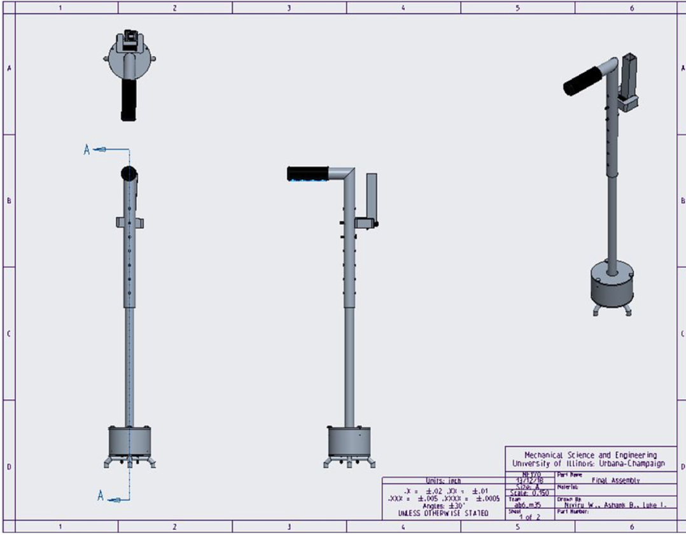
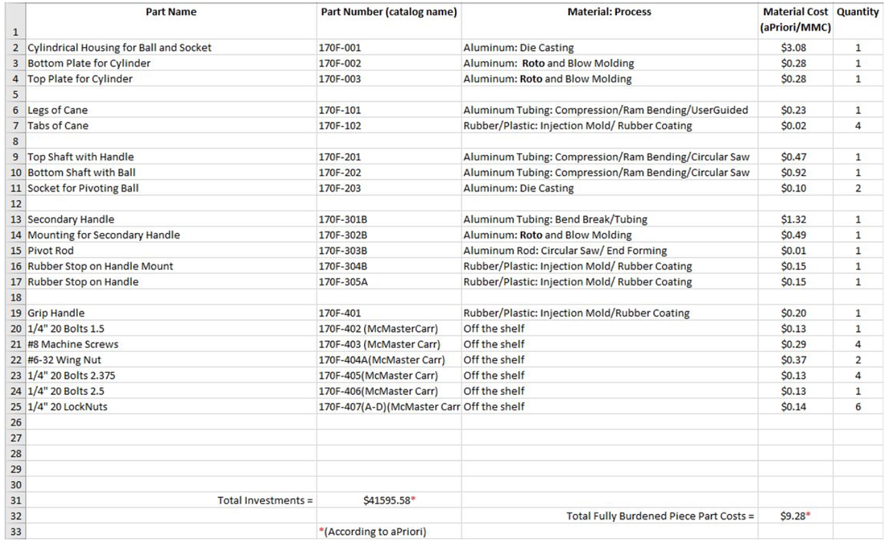

Tremor Adapting Cane
 My product is a therapeutic cane that resists tremors from those with muscle degenerative diseases, specifically Parkinson’s, that helps increases stability, safety, and independence of its user. The idea for targeting people with Parkinson’s and other muscle-degenerative diseases came from knowing those who have suffered. My grandfather has been to the hospital for falling due to his tremors causing him to alter the position of his cane. After seeing my grandfather go through these scary and severe falls, it occurred to me that many other people with similar conditions may go through experiences like these. After assessing a target group and the problem I wanted to fix, I came up with the idea to create a cane that resists the forces of tremors to prevent unnecessary falls.